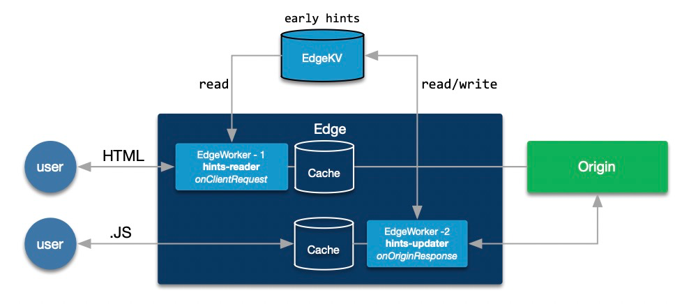

Dynamic HTTP 103 Early Hints with EdgeWorkers and EdgeKV

all_hints item stores all discovered resources.
onClientRequest
/home, /products/*,
/blog/*). Focus on landing pages and conversion
paths—not every page needs early hints.
onOriginResponse
ruxitagentjs_*, example.css). Not all
files need early hints—only critical resources.
Last-Modified headers. Only
contacted on cache miss. Provides version metadata for update
decisions.
--show-content), delete specific key
(--delete-key), full reset
(--full-reset).
all_hints object eliminates index lookups
/home,
/index.html)
/,
/home, /products/*, /blog/**.html, content-type
text/htmltext/html
onClientRequest event fires (EW 1)
all_hints item from EdgeKV namespacePMUSER_103_HINTS variable for
Property Manager
/example.css?v=10ruxitagentjs_*,
example.css*.css, *.js,
*.woff2onOriginResponse event fires (EW 2)all_hints to check if key exists and compare
versions
all_hints object with new entry
example.css?v=10example.css?v=08 (from old page
reference)08 < 10.edgerc credentials
all_hints content with
formatted JSON
all_hints object
all_hints item from EdgeKV
early-hints
manage-hints.sh variables: